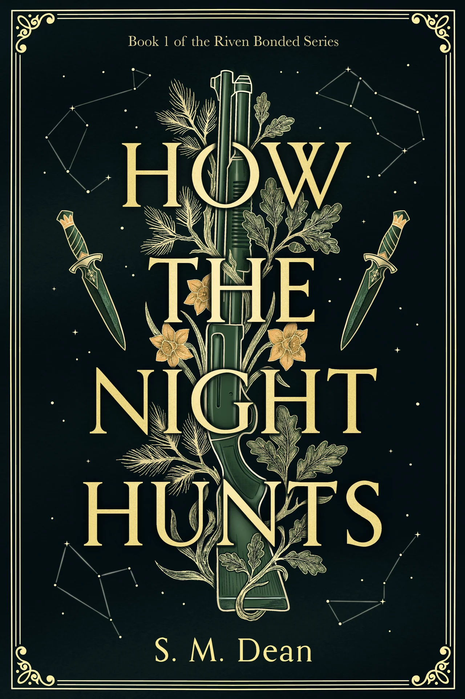

Survolez, ou glissez pour tourner
Touche D : calibrage
Calibrage · v14
Exposition
—
Reflets / or
—
Reflecteur frontal
—
Eclats de l'or
—
Reflets du papier
—
Bombe de la dorure
—
Vernis selectif
—
Durete du vernis
—
Relief
—
Tranches carton
—
Eclat tranches
—
Teinte tranches
—
Copier les reglages
Touche D pour masquer
